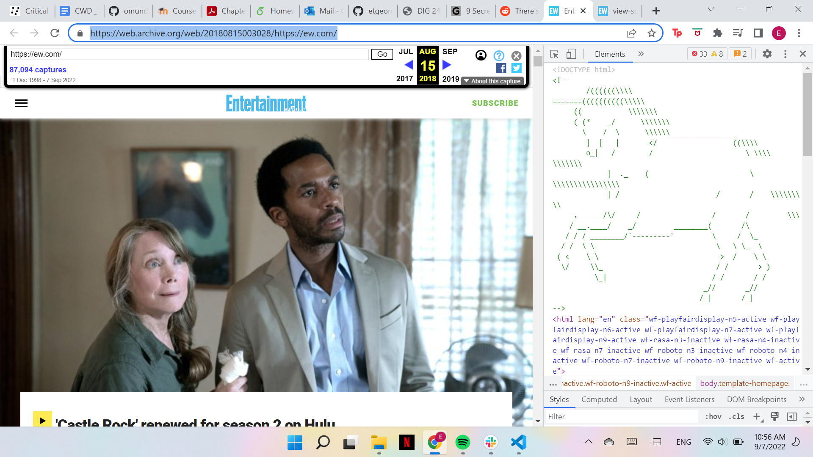

- Visit a website that you find cool or complex
- Hold down the FN key
- Press the F12 key
- Toggle CSS properties in the Style tab
- Run Javascript in the console
- Isolate certain HTML elements with the pointer tool in the top left corner

This EW archive page has an ASCII unicorn hidden in the source code! To access, click the link and open the dev-tools according to the steps listed above. Then, you should be able to see the unicorn in your own browser!
Using the dev-tools is like looking at the instructions for a really big Lego Set. You can see how the pieces are put together beyond the surface level and recognize common patterns and elements.